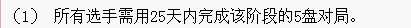

爱五子棋网第一届山口规则论坛团体战竞赛规则
#1 爱五子棋网第一届山口规则论坛团体战竞赛规则 作者：有志青年 发表时间：2012-5-24 16:44:51
一、 摘要
1. 比赛采用山口规则开局，执行5手N打，其他同《中国五子棋竞赛规则》
2. 比赛行棋
（1） 所有选手需用25天内完成对局。
（2） 每手棋的行棋时限为5天，不可以延迟行棋，如违反导致超时未行棋则判负。
（3） 每个选手有一次悔棋的机会，选手可在发谱后5分钟内发送正确的棋谱。但，是否被采纳由对方决定。
（4） 如选手认为后面的变化已经穷尽（即地毯）则可以发送相关棋谱。
3.比赛办法
比赛为团体赛，采用分台定人制进行，每队4人，开赛前需确定选手台次。
比赛采用单循环赛制，同台次选手间进行比赛，先手方代表队1、3台黑棋，2、4台白棋。
比赛分3个阶段进行，每个阶段进行5轮，各阶段开始时间提前通知。
名次区分：首先比较总局分，总局分高者名次列前，如相同，则依次比较场分、伯格制、1-4台得分来区分名次。
二、相关说明
（一）行棋规则
先后手的确定：同台次选手间进行比赛，先手方代表队1、3台黑棋，2、4台白棋。帖子标题中id在前面的账号先行。
五子棋的开局：山口规则开局，执行5手N打，其他同《中国五子棋竞赛规则》
行 棋：提交棋局的方法是复制对手的棋谱代码，之后点击回帖中的棋谱按钮，自己落子（提交棋谱时增加一个点即可，五手多打和指定开局除外)。
[如何行棋可参见帖子：如何复制、拆解、提交棋谱代码ShowPost.asp?ThreadID=13566]
悔 棋：每人每局仅允许一次悔棋行为。在本手提交5分钟内，及双方回帖之前，可以再次回帖提交对本手棋的新落点。对手可以在两个回帖中任选一个继续行棋。
步 长：指对方行棋提交后到自己行棋提交的时间间隔。本次比赛步长为5天。
总 时 长：指单局单方总用时。本次比赛总时长为25天。
（二）处罚与终局
处罚
对局过程中，非冲四帮挡或非其他可替走情况发生时，一方连下n（n>1)步，仅认同第1步，同时判违例一次(对方Pass者除外)。
对局过程中，一方连续提交多张棋谱的一律认定为非行棋行为（悔棋除外）。判违例一次。
对裁判员或对方棋手使用不文明语言者判违例一次。
10手内超时一盘扣威望1。
20手内和棋一盘，双方扣威望1。
旁观者言语或其他行为扰乱对局方的，扣威望1。
终局
违例：单局累计两次违例判负。
投子认输：以回帖的形式回复“投子认输”；
超时：由裁判员来确认此盘已经超时，判负；
和棋：一方以回帖的形式发“求和”，另一方紧跟着回帖“同意和”，此盘算和，如果对方没有回复“同意和”，则此盘继续对局。对局中一方提和次数不允许大于等于对方提和次数两次。一方提和后，开始计算对方比赛用时。
终结谱：一方给出后续变化终结谱之后，对方可做如下选择：
①、对方判断无误后理应主动认输。
②、若对方发现终结谱有漏洞，对方可走终结谱任一后续局面，判提交终结谱者违例一次，同时由提交终结谱一方继续行棋。
③、对方无视终结谱继续行棋。
必要时，此过程仲裁组可以参与判定。 [如何上传可参见帖子：帮助：如何在帖子中插入上传图片ShowPost.asp?ThreadID=3887]
一方提交终结谱后，开始计算对方比赛用时。
改帖：修改已经发布的内容，判负；
提前裁定：裁判员可以根据当前局面，直接就四三、禁手、活四等情况判定结果。
未尽事宜将由裁判组商讨决定。
（三）对阵编排
比赛分3个阶段进行，每个阶段进行5轮，各阶段开始时间提前通知。
各队序号请查看附一
| 轮次 | 对局信息 | |||||||
| 第一阶段5月26日开始 | ||||||||
| 1 | 1～16 | 2～15 | 3～14 | 4～13 | 5～12 | 6～11 | 7～10 | 8～9 |
| 2 | 16～9 | 10～8 | 11～7 | 12～6 | 13～5 | 14～4 | 15～3 | 1～2 |
| 3 | 2～16 | 3～1 | 4～15 | 5～14 | 6～13 | 7～12 | 8～11 | 9～10 |
| 4 | 16～10 | 11～9 | 12～8 | 13～7 | 14～6 | 15～5 | 1～4 | 2～3 |
| 5 | 3～16 | 4～2 | 5～1 | 6～15 | 7～14 | 8～13 | 9～12 | 10～11 |
| 第二阶段 | ||||||||
| 6 | 16～11 | 12～10 | 13～9 | 14～8 | 15～7 | 1～6 | 2～5 | 3～4 |
| 7 | 4～16 | 5～3 | 6～2 | 7～1 | 8～15 | 9～14 | 10～13 | 11～12 |
| 8 | 16～12 | 13～11 | 14～10 | 15～9 | 1～8 | 2～7 | 3～6 | 4～5 |
| 9 | 5～16 | 6～4 | 7～3 | 8～2 | 9～1 | 10～15 | 11～14 | 12～13 |
| 10 | 16～13 | 14～12 | 15～11 | 1～10 | 2～9 | 3～8 | 4～7 | 5～6 |
| 第三阶段 | ||||||||
| 11 | 6～16 | 7～5 | 8～4 | 9～3 | 10～2 | 11～1 | 12～15 | 13～14 |
| 12 | 16～14 | 15～13 | 1～12 | 2～11 | 3～10 | 4～9 | 5～8 | 6～7 |
| 13 | 7～16 | 8～6 | 9～5 | 10～4 | 11～3 | 12～2 | 13～1 | 14～15 |
| 14 | 16～15 | 1～14 | 2～13 | 3～12 | 4～11 | 5～10 | 6～9 | 7～8 |
| 15 | 8～16 | 9～7 | 10～6 | 11～5 | 12～4 | 13～3 | 14～2 | 15～1 |
（四）计分方法
计分：胜得1分，负得0分，和得0.5分
名次：首先比较总局分，总局分高者名次列前，如相同，则依次比较场分、伯格制、1-4台得分来区分名次。
（五）奖惩措施
无违规、弃赛等情况的代表队，比赛活动结束后，参赛选手及领队每人奖励论坛金币2000，威望5
根据计分方法评选出团体冠亚季军
冠军团队每人再获得威望10、网战大师勋章、人民币100元
亚军团队每人再获得威望7、网战大师勋章、人民币70元
季军团队每人再获得威望5、网战大师勋章、人民币50元
如比赛期间出现违规、弃赛等情况，将扣除报名时领队交纳的论坛金币5000
（六）裁判人员
裁判长及编排：我是裁判
裁判：有志青年、失落刀、无尽
三、附一：
各参赛队信息
| 序号 | 参赛队 | 一台 | 二台 | 三台 | 四台 |
| 1 | 不到最后一队 | 越狱行辕 | 一剑寒霜 | 踵酃 | 贝勒 |
| 2 | 蝶雨剑惜队 | 吴保刚 | 木瓜笨 | 摆棋白棋 | 弱惜 |
| 3 | 简单的友谊队 | 没事摆石子玩 | 珠子 | 秋风雾语 | 簡單 |
| 4 | 江海小菜虫队 | 黄药师 | 寒影星辉 | 瑞雪星光 | 松风月转 |
| 5 | 江苏五子棋二队 | 南京小飞机 | 罗马王子 | 名字全被抢注了 | 天籁之琴 |
| 6 | 江西五子队 | 江西天下秋水 | 江西五子 | 江西公子 | 洪四 |
| 7 | 聚贤天下 | 吉小鼠 | 聚贤寒萧 | 何邛讦 | 王沙 |
| 8 | 明教光明顶队 | 鬃毛 | 极地剑客 | 26 | 忧郁的双眼 |
| 9 | 明教黑木崖 | 潇洒 | 逆刃 | 日月丽天 | 啊呆 |
| 10 | 棋心愉悦-二队 | 棋心愉悦恒字 | 天真無邪 | 奇林 | 飞飞 |
| 11 | 棋心愉悦-一队 | 闹静 | 一尘 | 屏蔽 | 游戏人间 |
| 12 | 天天向上队 | 花斯 | 奕棋灵稹 | 小小亦默 | 心澈 |
| 13 | 西北狼梦氏炮灰队 | 西北狼梦魂 | 西北狼梦依 | 梦婷 | 西北狼梦天 |
| 14 | 炫飞1队 | 暴力连珠 | 清缘 | 流逝 | 冰雪笑醉 |
| 15 | 炫飞2队 | 炫飞缘灭 | 此生不过了然客 | 蝶舞红枫 | 山城刀客 |
| 16 | 中日别动队 | 中山 | 消逝的雨 | 梧桐风 | 小丸.net |
［此帖子已被 有志青年 在 2012-5-24 20:57:27 编辑过］
［此帖子已被 有志青年 在 2012-6-19 8:33:02 编辑过］
#2 Re:爱五子棋网第一届山口规则论坛团体战竞赛规则 作者：自来水 发表时间：2012-5-24 16:58:54
悔 棋：每人每局仅允许一次悔棋行为。在本手提交5分钟内，及双方回帖之前，可以再次回帖提交对本手棋的新落点。对手可以在两个回帖中任选一个继续行棋。
此条类似于任意手两打，迷惑对手用。。。
#3 Re:爱五子棋网第一届山口规则论坛团体战竞赛规则 作者：山城刀客 发表时间：2012-5-24 17:41:51

对比赛时长上有点疑问：
是每局棋25天，还是整个阶段5局棋一共25天？
#4 Re:山城刀客【==Re:爱五子棋网第一届山口规则论坛团体战竞赛规则==】 作者：梧桐风 发表时间：2012-5-24 17:46:55
引用：很显然是后者
原文由 山城刀客 发表于 2012-5-24 17:41:51 :对比赛时长上有点疑问：
是每局棋25天，还是整个阶段5局棋一共25天？
#5 Re:爱五子棋网第一届山口规则论坛团体战竞赛规则 作者：极地剑客 发表时间：2012-5-24 19:49:46
时间紧迫#6 Re:爱五子棋网第一届山口规则论坛团体战竞赛规则 作者：唐门小虎 发表时间：2012-5-24 21:35:48
知道了
#7 Re:爱五子棋网第一届山口规则论坛团体战竞赛规则 作者：忧郁的双眼 发表时间：2012-6-13 21:19:36
简单的基友队的问题，如何处理？直接给分还是？#8 Re:爱五子棋网第一届山口规则论坛团体战竞赛规则 作者：梧桐风 发表时间：2012-6-17 19:29:28
轮空直接得分呗